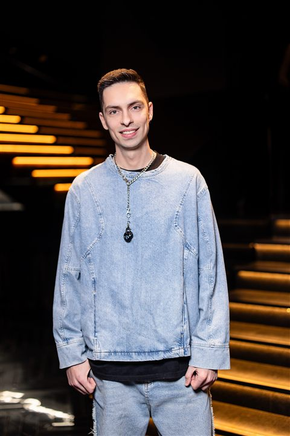
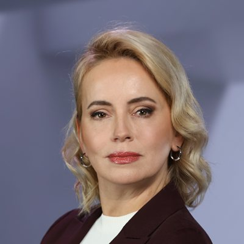
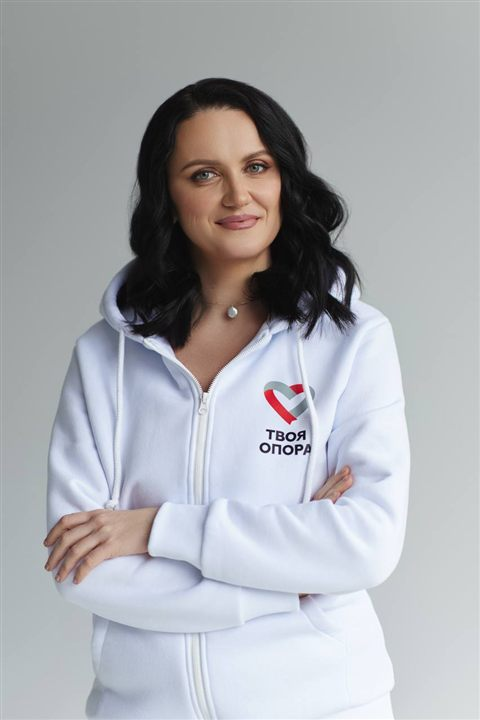

Ментори
Відомі люди, які поруч із прийомними родинами
Вони допомагають говорити про прийомне батьківство відкрито й тепло — щоб підтримка сімей стала суспільною нормою.
фото
Аніта Луценкотренерка, телеведучафото
Оля Цибульськаспівачка, ведучафото
Анна Різатдіноваолімпійська медалісткафото
Григорій і Христина Решетниквідома родинафото
Джамаласпівачка

фото
Олена Кравецьакторка
Фото та персональні звернення менторів додаємо поступово.